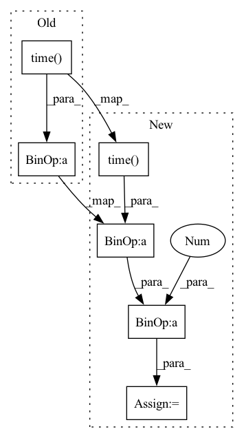

Pattern ID :30126

Before Change
outputs, self.num_classes, self.confthre,
self.threshold, class_agnostic=True
)
logger.info("Infer time: {:.4f}s".format(time.time() - t0))
return outputs, img_info
def visual(self, output, img_info, cls_conf=0.35):
After Change
outputs, self.num_classes, self.confthre,
self.threshold, class_agnostic=True
)
fps = int(1/(time.time() - t0))
logger.info("{}fps".format(fps))
return outputs, img_info
In pattern: SUPERPATTERN
Frequency: 3
Non-data size: 6
Instances
Fragment ID: 89297072
Project Name: ar-ray-code/yolox-ros
Commit Name: 55829a79f9f2306abdb8b40b17dbcf8b2e1a0c1f
Time: 2021-10-13
Author: ray255Ar@gmail.com
File Name: yolox_ros_py/yolox_ros_py/yolox_ros.py
M Class Name: Predictor
N Class Name: Predictor
M Method Name: inference(2)
N Method Name: inference(2)
M Parent Class: object
N Parent Class: object
M File Name: yolox_ros_py/yolox_ros_py/yolox_ros.py
N File Name: yolox_ros_py/yolox_ros_py/yolox_ros.py
M Start Line: 82
M End Line: 90
N Start Line: 82
N End Line: 91
'>
Before Change
Write log.
fps = int(self.num_timesteps / (time.time() - self.start_time))
logger.record("time/episodes", self._episode_num, exclude="tensorboard")
if len(self.ep_info_buffer) > 0 and len(self.ep_info_buffer[0]) > 0:
logger.record("rollout/ep_rew_mean", safe_mean([ep_info["r"] for ep_info in self.ep_info_buffer]))
After Change
Write log.
time_elapsed = time.time() - self.start_time
fps = int(self.num_timesteps / (time_elapsed + 1e-8))
logger.record("time/episodes", self._episode_num, exclude="tensorboard")
if len(self.ep_info_buffer) > 0 and len(self.ep_info_buffer[0]) > 0:
logger.record("rollout/ep_rew_mean", safe_mean([ep_info["r"] for ep_info in self.ep_info_buffer]))
'>
Fragment ID: 89297073
Project Name: dlr-rm/stable-baselines3
Commit Name: 75b6f3b3b0f207456d9dcac2c6e86e8e2a22115f
Time: 2021-05-11
Author: 57504230+J-Travnik@users.noreply.github.com
File Name: stable_baselines3/common/off_policy_algorithm.py
M Class Name: OffPolicyAlgorithm
N Class Name: OffPolicyAlgorithm
M Method Name: _dump_logs(1)
N Method Name: _dump_logs(1)
M Parent Class: BaseAlgorithm
N Parent Class: BaseAlgorithm
M File Name: stable_baselines3/common/off_policy_algorithm.py
N File Name: stable_baselines3/common/off_policy_algorithm.py
M Start Line: 344
M End Line: 350
N Start Line: 431
N End Line: 438
'>
Before Change
frame_i,
time.time() - last_loop,
input_fps,
1.0 / (time.time() - last_loop))
last_loop = time.time()
After Change
fallcount = annotation_painter.annotations(ax, preds, ID, input_fps)
loop_time = time.time() - last_loop
output_fps = 1.0 / loop_time
ax.text(0, 0.95, "FPS: {}".format(output_fps), fontsize=16, color="black", transform=ax.transAxes)
'>
Fragment ID: 89297071
Project Name: cwlroda/falldetection_openpifpaf
Commit Name: 15305d7fcd1078bad60515c818969c4819f91aeb
Time: 2020-08-27
Author: crescendostriker@gmail.com
File Name: video.py
M Class Name: AnonimousClass
N Class Name: AnonimousClass
M Method Name: inference(2)
N Method Name: inference(6)
M Parent Class:
N Parent Class:
M File Name: video.py
N File Name: video.py
M Start Line: 133
M End Line: 178
N Start Line: 133
N End Line: 210